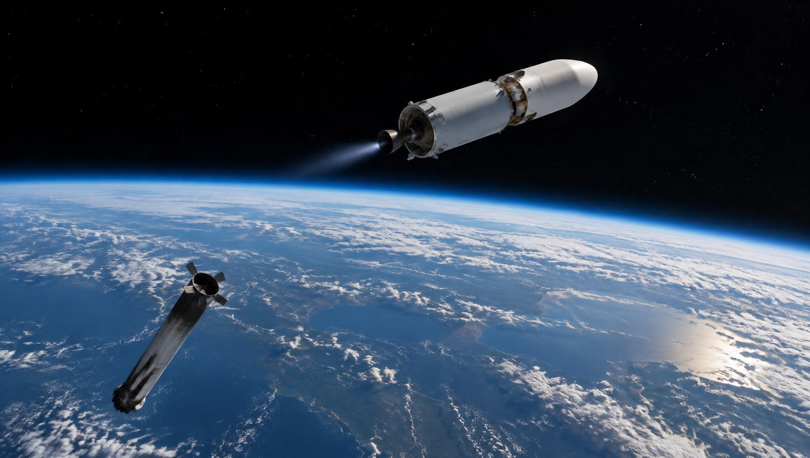
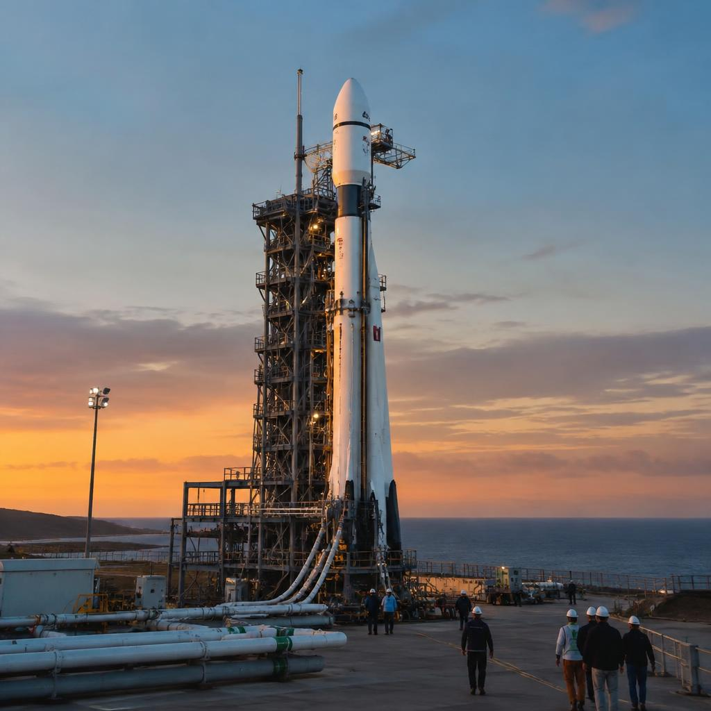
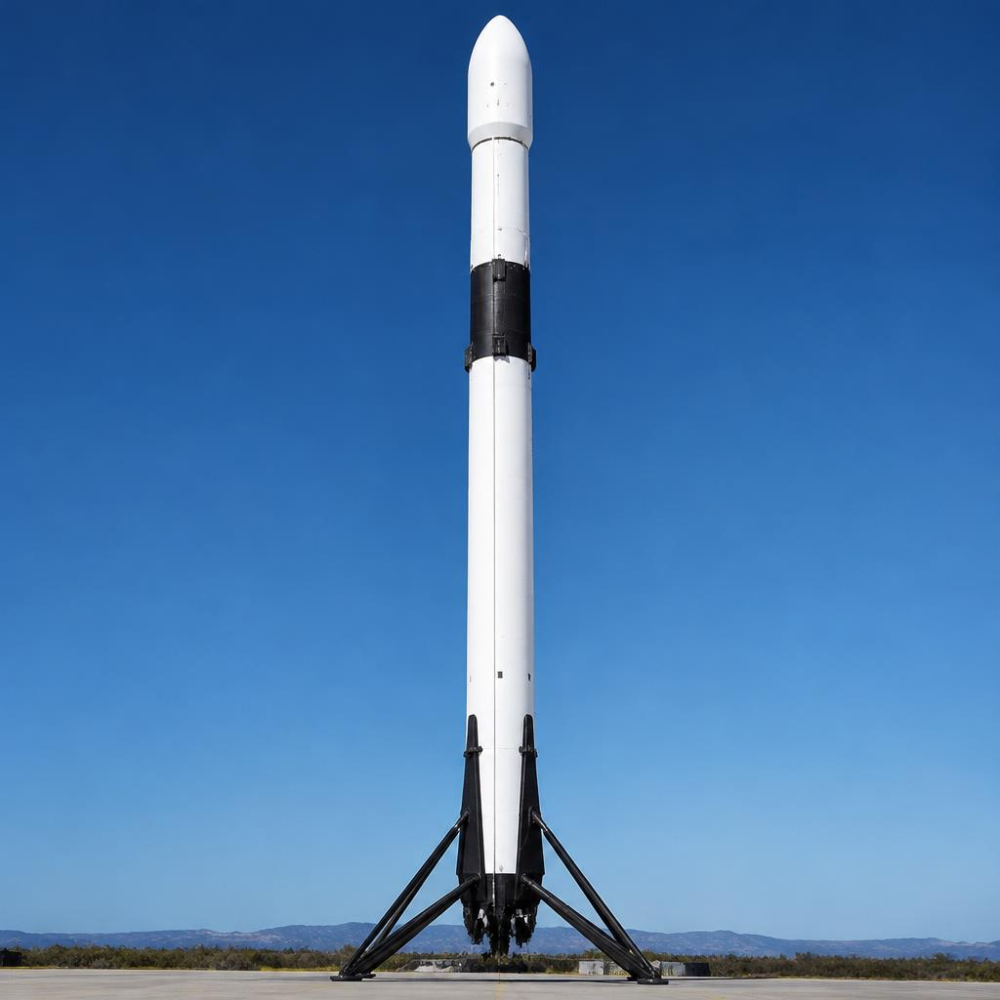
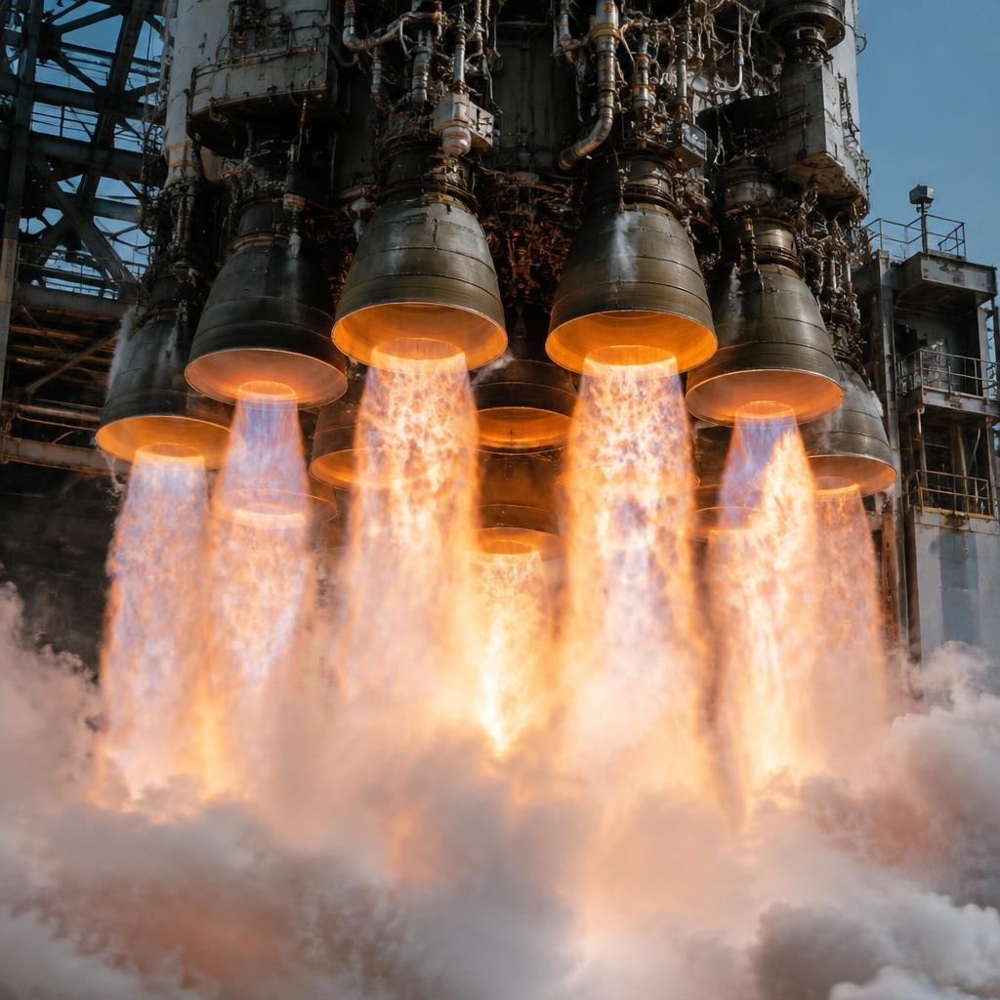
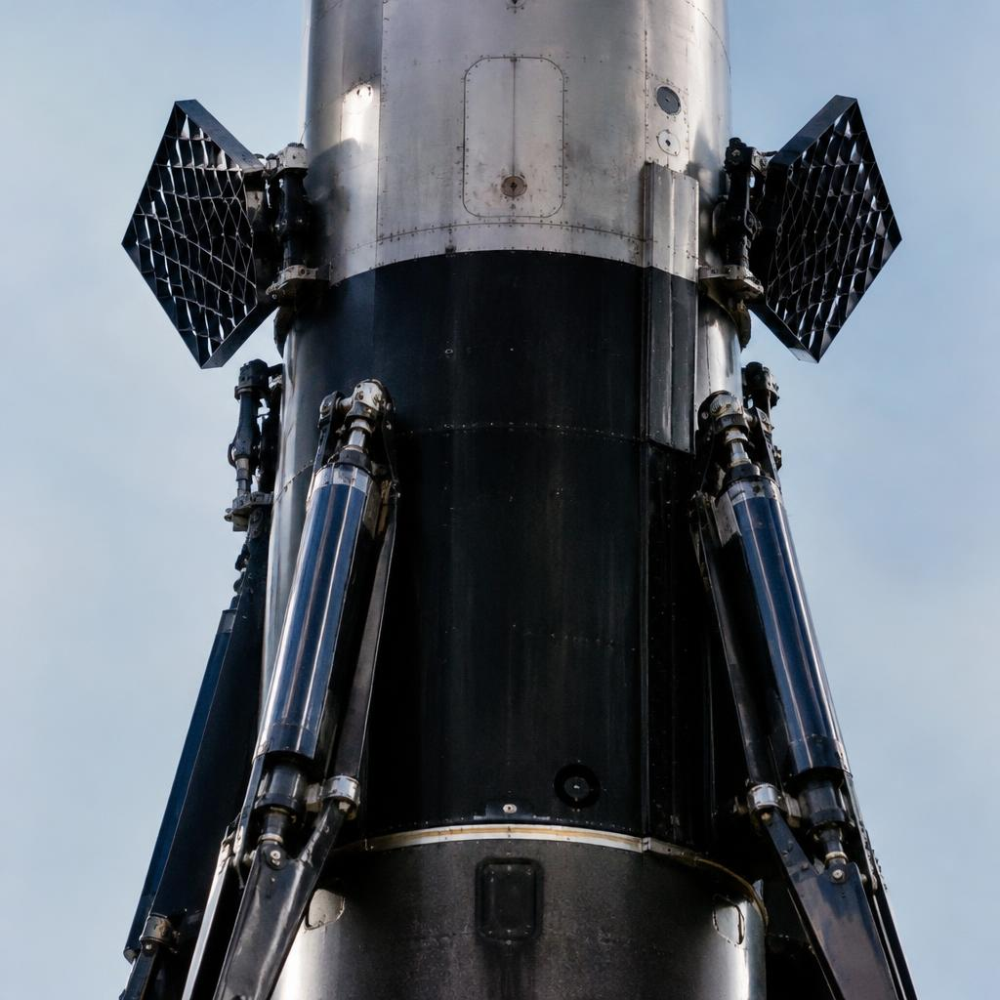
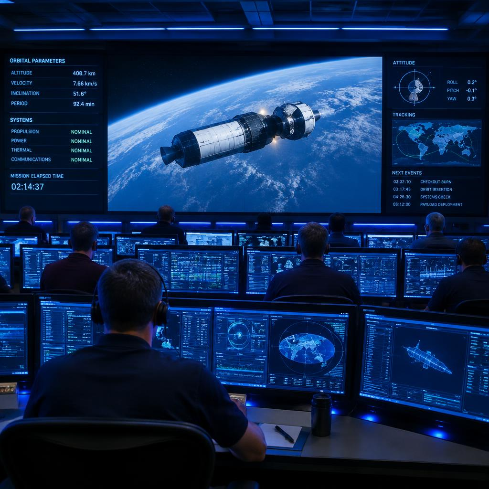

Launch · Mission 40
Nova Catch-1
A 71-metre booster falls from the edge of space and is caught mid-air by the launch tower's arms — no legs, no pad, no landing burn mistakes to recover from.

The flight before the catch
Catch-1 launched at dawn with the Ship carrying a bare test article — no instruments beyond telemetry, because the mission's real payload was data about the booster. Both stages are fully reusable, so unlike every other flight in the fleet, nothing about this launch was disposable: the Ship was headed for a soft splashdown, and the booster for the tower.
The 33 VX-Raptor engines lit in three staggered groups over four seconds — a 33-engine ignition is sequenced because lighting them all at once produces a pressure wave that can damage the engines themselves. The rocket cleared the tower at T+0:09, already moving faster than a fighter jet at sea level.

T+2:40 — hot staging
Nova separates its stages while the booster's engines are still firing — “hot staging”. The Ship ignites its own engines while vent ports in the booster's top ring let the exhaust escape, so the two vehicles push apart without ever shutting down. It sounds violent, but it keeps acceleration continuous: nothing coasts, nothing has to relight, and the payload keeps a steady ride.
The moment the Ship cleared, the booster began its flip — a slow pirouette guided by gimballed engines, turning from engines-first to engines-toward-its-destination in about ten seconds. From this point it is falling, and every remaining manoeuvre is about choosing exactly where it lands.

The descent — from Mach 6 to a hover
Reentry is the violent part. The booster fell back into the atmosphere at over six times the speed of sound, its steel skin glowing from the compression heating of air it could not push out of the way. The grid fins — four enormous lattice surfaces taller than a person — steered it through this phase, each one moving under its own hydraulic actuator to trade altitude for lateral distance.
The guidance problem is strange: the booster must fall short on purpose. If it aimed exactly at the tower, any small error would be a collision, so it targets a point a few hundred metres to the side and only redirects toward the tower at the last moment, once its accuracy is confirmed. A booster that misses gets redirected to the ocean automatically.

T+7:31 — the catch
The final approach is the quietest part of the flight. The booster killed its last velocity with a brief landing burn, then fell the last 200 metres at constant speed past the 145-metre tower. Two mechanical arms — each weighing more than a loaded truck, driven by electric motors — tracked the booster's engine-rail fittings and closed around them at T+7:31.
The catch transfers the booster's entire momentum into the tower's structure in under a second; the arms absorb the load with hydraulic dampers, then rotate inward and lower the booster onto the transport stand. Total time from catch to wheels-down on the stand: four minutes. No landing legs were ever attached, and none ever will be.

What the data said
The catch point was 2.1 metres from centre — inside the tolerance the arms were built for, and repeatable. Sensors on the arms recorded a peak load of 84% of design capacity, meaning the structure has margin. The booster itself was inspectable within the hour, because it never touched a salt-water ship or a remote pad: it came home to the same building it launched from.
Catch-1 is the flight that closes the loop: a booster that launches, returns to the tower it left from, and can theoretically be restacked and flown again within days. The next milestone is the ship — landing 50 metres of spacecraft softly on its own engines, first in the ocean, then back on the tower.